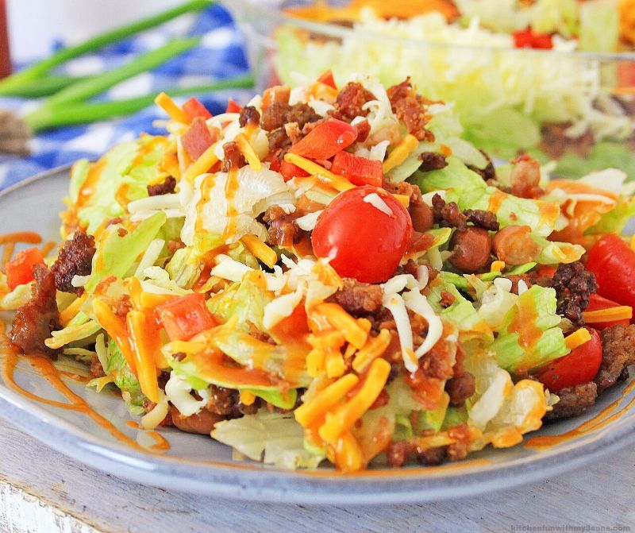

Taco Salad

Description
This is a very flexible dish. You can add and omit ingredients to suite your preferences.
Don't eat red meat? Use chicken instead. Vegetarian? Make it without meat.
Ingredients
- 1 lb. ground beef
- 1 pkg taco seasoning
- 2/3 c. water
- tortilla chips
- black beans
- cheese, shredded
- shredded lettuce
- salsa
- sour cream
Steps
- Brown ground beef in medium skillet, drain excess fat.
- Add taco seasoning and water
- Cook until most water and seasoning is absorbed. About 5 minutes.
- On individual plates crush tortilla chips.
- Add meat and other toppings as you like.